墓じまいをご検討中の、墓守さまへ
お寺へのご連絡も、 離檀代行も。 まるごとお任せください
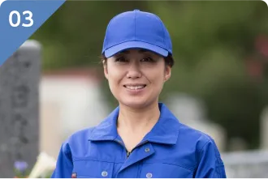
お寺への
ご連絡も
面倒な
書類も
専任スタッフが
代わりに！
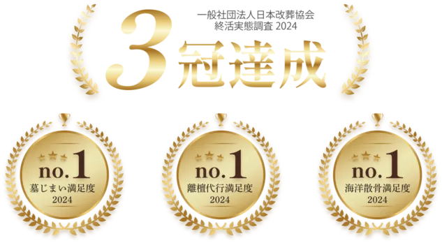
業界最安値へ挑戦！
1㎡あたり 5〜6万円〜
受付 11:00〜18:00（日曜定休）／ クレジットカード各種対応
ご相談・お見積りは無料。営業電話はいたしません。
- 創業 18年
- 離檀完了率 100％ 過去800件の実績
- 全国 7支部
墓じまい・離檀で
お悩みではありませんか？
-
お墓を守り続けられるか
不安…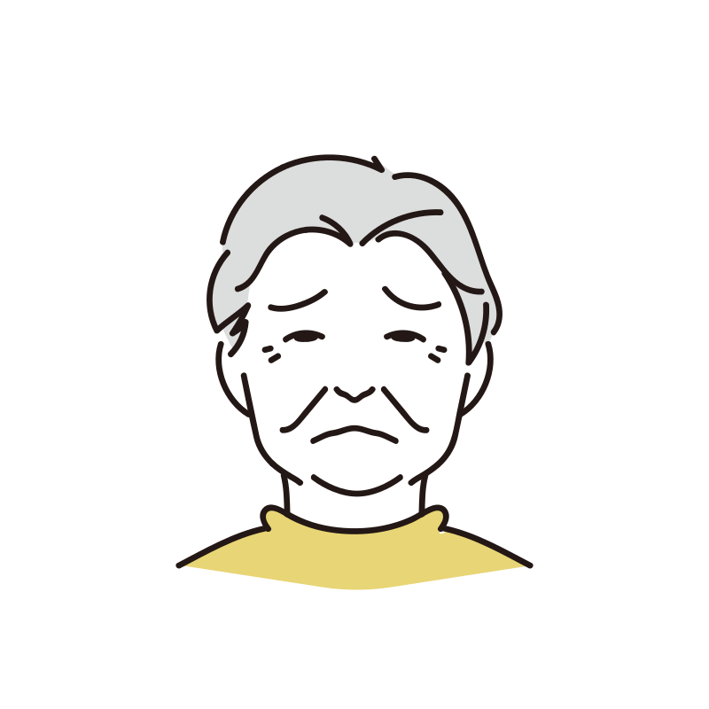
-
離檀料がいくらかかるか
心配…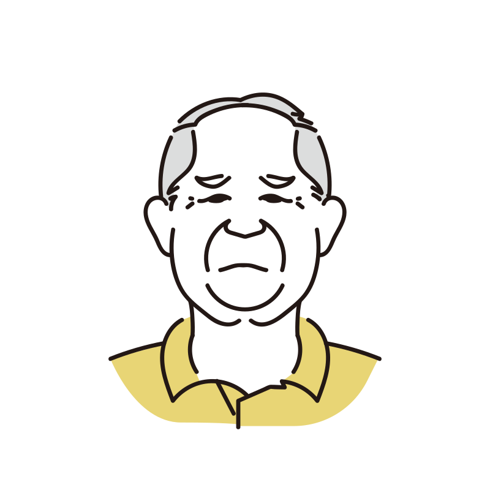
-
遠方のお墓で
何から始めれば…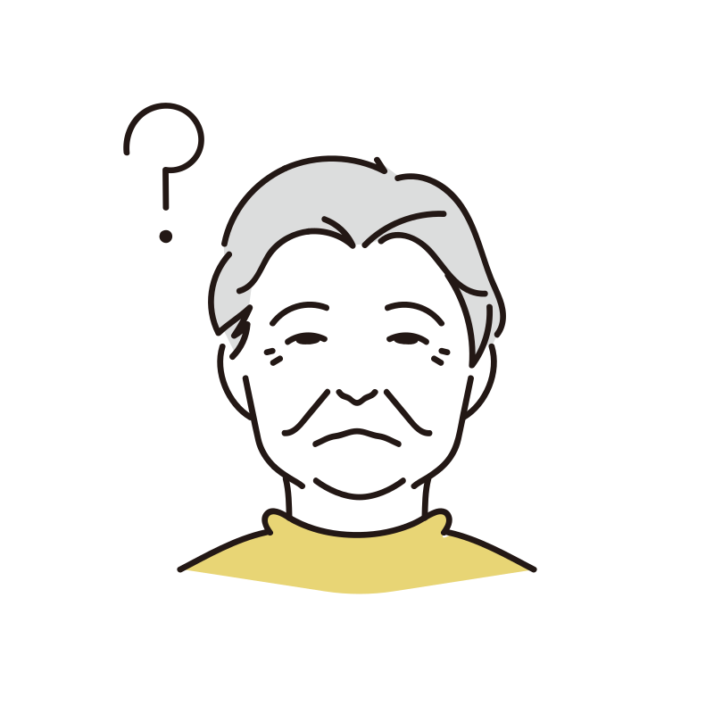
そのお悩み、「わたしたちの墓じまい」が
まるごと解決します
離檀に関するお寺とのやり取りをはじめ、墓石の撤去・処分、改葬手続き、遺骨の移動、永代供養まで。墓じまいに必要なことをまとめてお手伝いします。
全国のお墓に対応。はじめての墓じまいでも安心して進められるよう、経験豊富な専任スタッフがご家族に代わって丁寧にサポートします。
お墓をそのままにしておくと…
管理する人がいなくなったお墓には、こんなことが起こる可能性があります。
-
無縁墓として扱われ、管理者側で強制撤去されることがあります。ご先祖さまの弔いができなくなってしまいます。
-
ご親族がいる場合、お墓の管理方法をめぐってトラブルになることがあります。
-
強制撤去されると、ご遺骨は合同のお墓に埋葬され、ひとつの骨壺として取り出せず永久に供養ができなくなります。
-
改葬費や合祀墓への納骨費、未払いの管理費などが、まとめて高額な請求として届くことがあります。
だからこそ、元気なうちの墓じまいがおすすめです
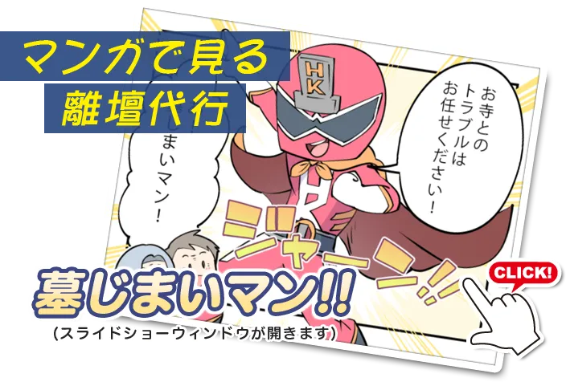
離檀代行に含まれる内容
言い出しにくいお寺とのやり取りは、すべて私たちが引き受けます。
-
01
お寺に墓じまいの件を
あなたに代わって伝える -
02
不要な離檀料や法要代の
お断り -
03
閉眼供養やお礼の
お支払い -
04
万が一裁判になった場合の
弁護士費用
離檀代行サービスの特徴
-
円満解決
お寺とは揉めずに
ご恩のあるお寺さまとの関係を大切にしながら、感謝の気持ちとともにご意向をお伝えします。
-
100％
離檀完了の実績
これまで過去800件の離檀代行で、すべて離檀を完了しています。
-
自社施工
全国で唯一「わた墓だけ！」
お寺への連絡から永代供養まで、すべて自社で対応。窓口がひとつなので、ご相談から完了までスムーズです。
永代供養先の種類と費用
墓じまいのあとのご遺骨の行き先も、ご希望やご予算に合わせてご提案します。
-
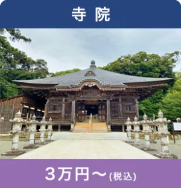
寺院
3万円〜（税込）
-
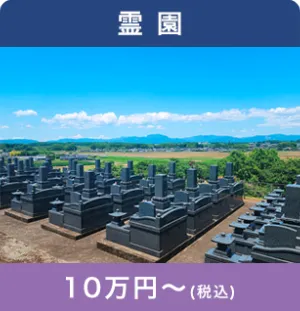
霊園
10万円〜（税込）
-
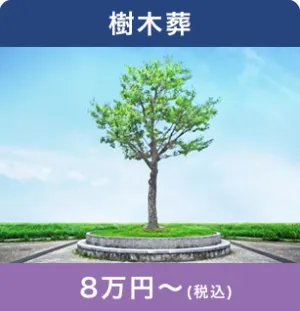
樹木葬
8万円〜（税込）
-
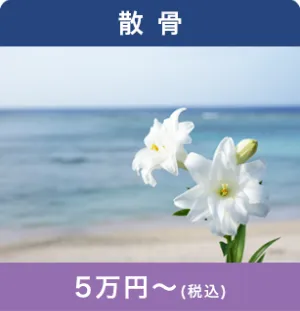
散骨
5万円〜（税込）
-
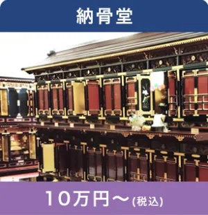
納骨堂
10万円〜（税込）
-
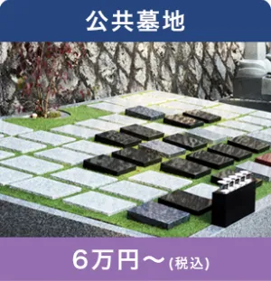
公共墓地
6万円〜（税込）
サービス内容と料金
必要なものだけを選べる明朗会計です。お支払いは墓じまいが終わってから。
平均的な墓じまいの費用
230,000円
実際の費用はお墓の場所や広さによって変わります。まずは無料のお見積りでご確認ください。
-
お墓の撤去
9.9万円〜
墓石・カロート・土台の解体、墓誌・灯篭・植栽の撤去を行い、墓地を更地にします。工期は2〜4日ほどです。
-
お寺の離檀代行
6万円〜
- 離檀サポート
- 6万円
- 離檀代行
- 12万円
- 離檀トラブル代行
- 18万円
サポート：お寺が離檀を了承済みで、手続きのみ代行 ／ 代行：ご報告・交渉など一切を代行 ／ トラブル代行：トラブル発生後の離檀代行
-
改葬の行政手続き代行
3万円
書類の取り寄せから、改葬に必要な手続き全般をサポートします。
-
遺骨の永代供養
3万円〜6万円
提携している永代供養先のご紹介のほか、樹木葬や散骨もご提案します。
-
閉眼供養・各種法要の
お坊さん手配3万円 / 5万円
専門のお坊さんが心を込めてご供養します。宗派や形式が異なる場合も柔軟に対応します。
-
仏壇・仏具の供養処分
3万円〜
- 小型（幅約30cm以下）
- 3万円
- 中型（約50〜80cm）
- 6万円
- 大型（80cm以上）
- 9万円
- お支払いは墓じまい完了後
- お見積りから変更がなければ追加料金なし
- 銀行振込・クレジットカード対応
墓じまいの流れ
ご注文から施工まで最短20日。お電話いただいたら、あとは私たちにお任せください。
-
STEP1
永代供養先・
遺骨の整理先を探す -
STEP2
お寺など今の管理先に
墓じまいを伝える -
STEP3
改葬の行政手続きと
書類作成のサポート -
STEP4
ご遺骨の整理や
移送のサポート -
STEP5
お墓の撤去
他社プランとの比較
| A社 | お寺に依頼 | ||
|---|---|---|---|
| 平均的な墓じまいの金額 | 230,000円 | 450,000円 | 600,000円 |
| 対応エリア | 日本全国 | 関東近郊※別途交通費 | 遺骨の移動不可 |
| 改葬手続き | 行政書類 申請サポート |
なし | 行政書類申請代行※有料 |
| 墓じまい後の供養サポート | あり合葬墓や共同墓地の紹介、引越し手伝い | 一部あり※別料金 | 一部あり※別料金 |
施工事例
墓じまい前と後の様子です。更地にしてお返しするところまで責任を持って行います。
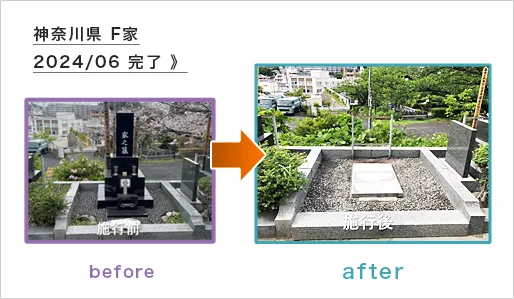
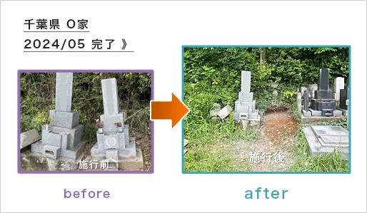
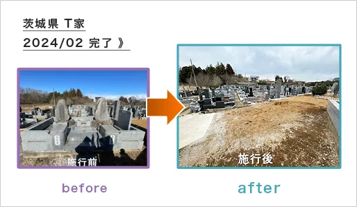
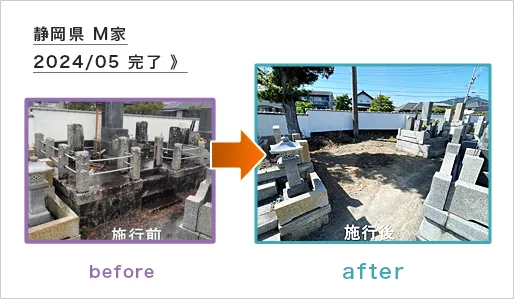
お客様の声
セミナーと窓口の提携
-
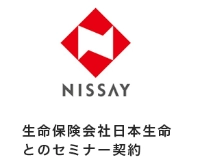
生命保険会社日本生命とのセミナー契約
-
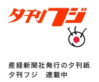
産経新聞社発行の夕刊紙夕刊フジにて連載中
-
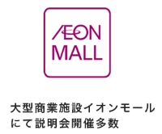
大型商業施設イオンモールで説明会を多数開催
専任スタッフ紹介
経験豊富な専任スタッフが、はじめての墓じまいでも安心して進められるよう丁寧にサポートします。
-
高木
-
山本
-
竹下
ショールーム・全国7支部
- 仙台支部
- 福島支部
- 藤沢支部（本社）
- 名古屋支部
- 大阪支部
- 兵庫支部
- 福岡支部